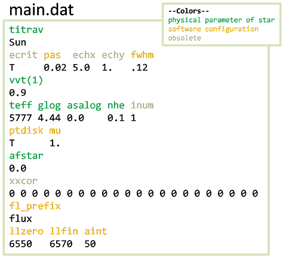

4 Reference section¶
This section contains a more complete description of the PFANT pipeline and the files and file types involved.
4.1 Spectral synthesis pipeline¶
+---------------------------+---------------------main.dat
| | |
v v (H lines) |
grid.mod +----------+ +------+ |
or ---->|innewmarcs|-->modeles.mod--->|hydro2|<----------+ |
grid.moo +----------+ | +------+ | |
(interpolate | | | |
atm. model) | v | |
| thalpha | |
| thbeta absoru2.dat |
| thgamma hmap.dat |
| thdelta | |
| thepsilon | |
| | | |
abonds.dat | v | |
dissoc.dat +-------->+-----+ | |
atoms.dat (synthesis)|pfant|<----------+ |
molecules.dat ------------->+-----+<--------------------+
partit.dat | |
v |
flux.norm |
flux.spec |
flux.cont |
| |
v |
+------+ |
(convolve spectrum) |nulbad|<-------------------+
+------+
|
v
flux.norm.nulbad.<fwhm>
Figure 5 - Spectral synthesis pipeline - Fortran programs (boxes) and their input/output files (see Figure 2 for extended description of modules).
4.2 Input/output data files¶
The different file types in the pipeline will be explained in the next subsections.
4.2.1 Stellar data and running settings¶
Table 2 – stellar and running settings data files. The “–options” column shows the command-line
options that can be used to change the name for a particular file, e.g.,
run4.py --fn_main main-other.dat.
| Default name | –option | Description |
|---|---|---|
| main.dat | –fn_main | main configuration file containing all stellar parameters except abundances (Figure 6). |
| abonds.dat | –fn_abonds | chemical abundances |
| dissoc.dat | –fn_dissoc | dissociation equilibrium data. This file is optional, and can be created using abed.py if needed. |

Figure 6 - representaion of a file main.dat. The black color shows the characters
that are the actual parts of the file. Descriptions of parameters can be found in x.py graphical interface
4.2.2 Common data files¶
Table 3 – Common data files.
calculation.
| atoms.dat | –fn_atoms | atomic line list
| molecules.dat | –fn_molecules | molecular line list
| hmap.dat | –fn_hmap | hydrogen line list
| partit.dat | –fn_partit | partition functions
| grid.mod or | –fn_modgrid | MARCS atmospheric model grid (models
only).
| | | Created using create-grid.py --mode modbin from files
_newnew*.mod_
| grid.moo | –fn_moo | MARCS atmospheric model grid (models with
opacities) (Figure 8).
| | | Created using create-grid.py --mode opa from a bulk of
models downloaded from the MARCS website

figure shows the (teff, glog, [Fe/H]) | values for all existing atmospheric models in the grid (this is the file grid.moo provided). The uppermost point are the Sun coordinates.
4.2.3 Files created by the Fortran programs¶
4.2.3.1 Files created by innewmarcs¶
Table 4 – Files created by innewmarcs
| Default name | –option | Description |
|---|---|---|
| modeles.mod | –fn_modeles | atmospheric model (binary file) (Figure 8A) |
| modeles.opa | –fn_opa | atmospheric model: opacities (MARCS ”.opa” format) (Figure 8B,8C) |

innewmarcs creates two separate files (Table 4). They are createdseparately for | historical reasons. modeles.opa follows the same structure of ”.opa” files downloaded from | the MARCS website. modeles.mod does not follow the same structure of MARCS ”.mod” files. | Figure 8 illustrates the information contained in these files.
4.2.3.2 Files created by hydro2¶
hydro2 creates a series of files named thalpha (Figure 9),thbeta, thgamma, | thdelta, thepsilon etc (the series of hydrogen lines is given in hmap.dat).

Figure 9 – Example of H-alpha line profile calculated by hydro2.
4.2.3.3 Files created by pfant¶
Table 5 - Files created by pfant
| Default name | Description |
|---|---|
| flux.spec | un-normalized flux (erg/cm**2/s/Hz multiplied by 10**5) |
| flux.cont | continuum flux (erg/cm**2/s/Hz multiplied by 10**5) |
| flux.norm | normalized flux (un-normalized flux)/(continuum flux) |

Figure 10 - plots showing three pfant output files for the [4000, 7000] angstrom region:
calculated spectrum; continuum; normalized spectrum. The common prefix “flux” can be changed
in file main.dat to give a set of files with different names.
4.2.3.4 Files created by nulbad¶
nulbad creates a file whose name by default is the full input filename with the FWHM | added with three decimal places. For example,
nulbad --fwhm 1.2
creates a file named flux.norm.nulbad.1.200.
To change this, use option “–fn_cv”, for example,